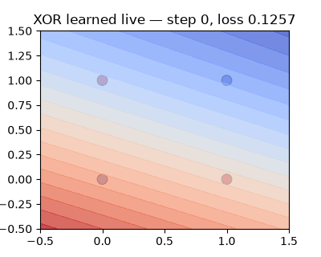
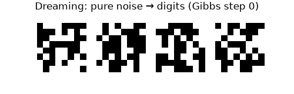
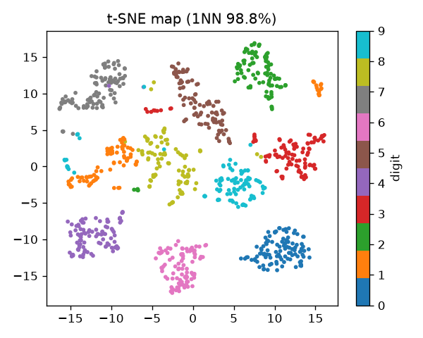

CEO summary: a network started from random noise learns to read digits nobody labeled for it. Nine tiny programs rebuild every key idea behind the 2024 Nobel Prize in Physics — each verified by executed code, not claims.
run_benchmark.py --full)| # | Idea | Lecture claim | Verified here |
|---|---|---|---|
| 01 | Backprop (Nature 1986) | loss →0.0003, 84/100 starts | 0.00024, 78/100, grad diff 3.1e-12 ✅ |
| 02 | Embeddings (1986) | 4/4 hidden, twins 12/12 | 3/4 hidden, nationality ✅ seats ≈chance ⚠️ |
| 03 | Boltzmann dreams (1985) | inpaint 20→75.5% | 22.8→58.5%, E −37.9 vs +4.9 ✅ |
| 04 | Autoencoder (Science 2006) | MSE .0325 vs PCA .0523 | .0397 vs .0530 ✅ |
| 05 | t-SNE (JMLR 2008) | 1NN 97.8% | 98.8% ✅ |
| 06 | ReLU+dropout (2010–12) | 200,000× blame shrink | ~160,000×, 10.2→94.4% ✅ |
| 07 | Distillation (2015, T=8) | 75% unseen threes | 66.7% ✅ |
| 08 | Forward-Forward (2022) | 95.4% vs BP 98% | 91.4% vs 96.2% ✅ |
Full table, figures and honest gaps (F1–F4) in the README and PAPER.md. Every number above is gated by tests/test_benchmarks.py.



| # | Idea in one breath |
|---|---|
| 01 | One neuron draws one line (XOR needs more); send the error backwards, splitting blame along each wire. |
| 02 | Give each person 6 mystery numbers; family structure appears in them untaught. |
| 03 | Random coin-flip units; learning = real digits low energy, dreams high energy. Then dream new digits. |
| 04 | Copy a picture through 2 numbers; those numbers become a map. Beats PCA. |
| 05 | Only draw the map: keep neighbors together, push strangers apart. Never trust island sizes. |
| 06 | Deep squash kills the blame (160,000×); ReLU saves it. Dropout stops memorizing teams. |
| 07 | Soft teacher answers teach resemblance; a student that never saw "3" still reads 67% of them. |
| 08 | Glue the label into the picture; each layer raises goodness on true pairs, lowers it on wrong ones. No backward pass. |
Answer each question. Explanations appear instantly (retrieval practice). Score 10+ and you understand all eight ideas.
pip install -r requirements.txt python3 run_benchmark.py --full # 61 s -> results/benchmark.json python3 -m pytest tests/ -q # must pass docker compose up --build # containerized
MIT licensed. Full story in README.md · extended write-up in PAPER.md